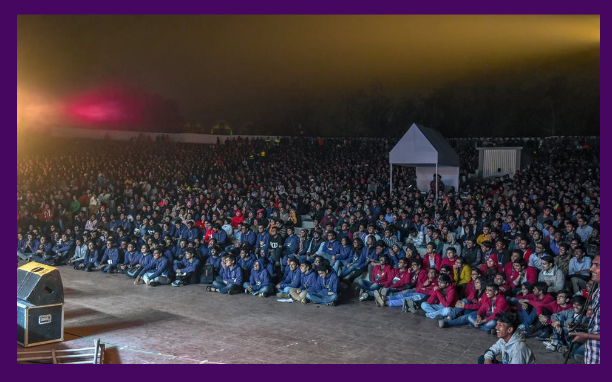
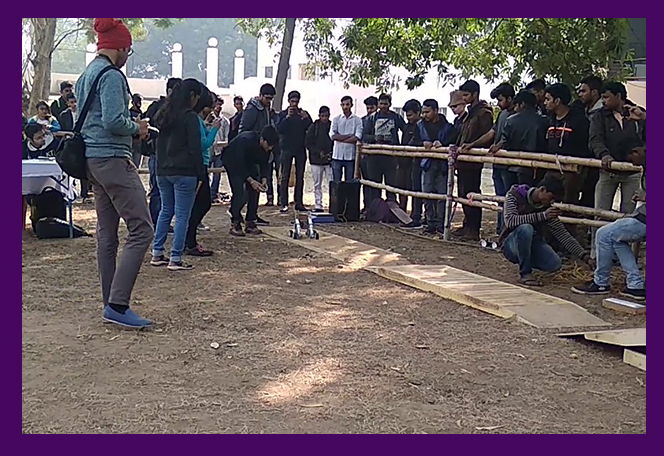
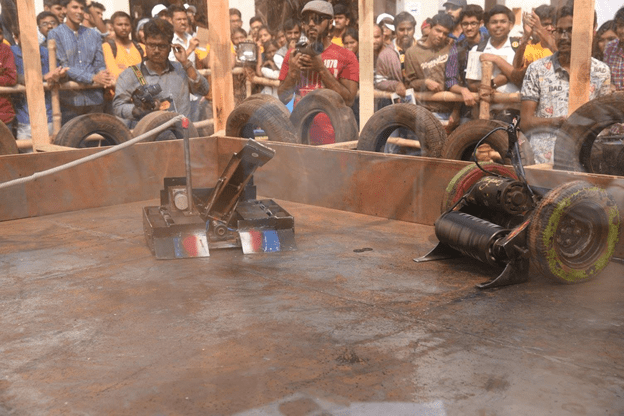
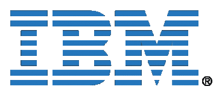

Kshitij is the annual techno-management fest of IIT Kharagpur, one of India’s premier technical institutions,started in 2004, Kshitij was conceived with the aim to provide the technically inclined youth a national-level platform, where their talent and expertise would be recognized and rewarded. Having grown exponentially since its nascent years, Kshitij receives overwhelming participation from the student community all over the world. The official website of Kshitij ktj.in, is the largest student run website, receiving 8 million clicks in its 2012 edition. Kshitij organizes a wide range of events encompassing every genre of technology and management with the aim to infuse a scientific and rational temperament in the young minds.World-renowned organizations like ACM, IEEE, ASME, ASHRAE and IMechE certify numerous events of the fest. To address issues plaguing our society, Kshitij undertakes social initiatives in association with the foremost NGOs of the country. Workshops are conducted all over the country to help the participants gain hand-on experience and enhance their technical skills. Kshitij also organizes guest lectures, exhibitions and megashows. Kshitij 2018 was held from 19 to 21 January 2018, with a total participation of over 70,000 and Rs 45 lacs offered as prize money. The 16th edition of Kshitij is scheduled from 18 to 20 January 2019.
Kshitij, IIT Kharagpur – The Technical Extravaganza is the Asia’s Largest Techno-Management festival and is the largest and finest technical platforms for the students for great innovations and new ideas. It was started in 2004 and the custom follows up till today. This was the 14thedition of the festival and was held for a span of three days from 19thJanuary to 21stJanuary 2018 with a participation of 60,000 students from across the country. The festival was loaded with inspiring and fun events and competitions, Workshops, Exhibitions, Guest Lectures, Megashows and more. Kshitij is completely organized and managed by the student body. However, the team of Kshitij is divided into several departments like: Promotions and Events Departments, Sponsorship Departments, Publicity and Creativity Departments, Guest Lectures Department , the Megashows Department, Competitions Departments and more; headed by the overall coordinators. The basic motive of the festival is to achieve the perception to be at the district of the rising technovation and to unfold new and raw concepts of the youth amongst everyone. However, any festival is impossible without the chief supporters or the sponsors; few of the sponsors and partners of Kshitij 2018 were: Larsen & Turbo(Title Sponsor), Boeing and Hewlett Packard(Strategic Partners), the Telegraph and Saavan (Presenting Partners), 9Xmand 9XO(Music Streaming Partners); Intel, SIDBI Venture, Airbus, IBM, NVIDIA, Experian, CROCS, Mouser.com(Major Partners); DE Shaw & Co., EXILINX, CYIENT, Synopsys, Tata Products, Coca Cola, CESC, JSLN (Event Sponsors); FORE, Pilot, Bisleri, Inshorts, FestPav.com(Other Sponsors) and more.
The freezing cold January morning brought us to the much awaited grand festival i.e. Kshitij 2018, IIT Kharagpur. The events included, were held from every field and genre like the Theme Events, Guest Lectures, Competitions, Robotics, Departmental Events, Workshops, Paper Presentations, Megashows and more. Apart from world-class certified events, Kshitij conducted Guest Lectures by prominent personalities across the globe, free of cost workshops by tech giants and exhibitions from all over the world.World-renowned organizations like ACM, IEEE, ASME, ASHRAE, CSI, ICRIER, CSIR and IMechE certify numerous events of the fest. To address issues plaguing our society, Kshitij undertakes social initiatives in association with the foremost NGOs of the country. However, the few other highlights of Kshitij 2018 were events like
Capital Events
- Laws of Motion: It is a flying aircraft designing and creation event felicitated by the Institution of Mechanical Engineers IMechE. It is a standout amongst the most celebrated events of Kshitij, which gets interests from students everywhere throughout the nation.
- Eureka: Paper presentation competition, certified by IEEE.
- Overnite: The ACM ICPC multi-commonplace programming challenge is guaranteed by ACM, the world’s biggest and most renowned logical and instructive processing society
- Embetronix: It is an inserted hardware circuit plan rivalry spread more than two rounds
- Nightshift: An adjustment of the well known Discovery Channel appear, Junkyard Wars, this occasion is additionally ensured by IMechE
- Clash of Brains: Game Theory based occasion, arranges by The KGPian Game Theory Society (IIT Kharagpur section of The Indian Game Theory Society
- Relic Hunter: An online treasure hunting game requiring analytical skills to solve tricky questions to get to the next clues in the ultimate quest for treasure. Based on Harry Potter
- Code-O-Soccer: A simulation-based strategic coding event which provides you with a perfect platform to solve a strategy based creative problem using your coding and strategic
- Sand Rover: Participants had an opportunity to build up an all-terrain bot and show their technical skills, where the wheels are bound to surf over uneven contours with minimum spillage of sand in sandrover. In this participant have to discharge their bots through challenging Obstacles pushing it to extreme limits while the clock ticks
Robotix Events
There is a genre type called Robotix, which has numerous occasions dependent on novice apply autonomy. The occasions for Kshitij 2018 were:
- Robowars: Build a robot and inspire it in the field to battle and win from different robots 
- Zenith: It is post-war time and the place is all in shambles, with rubble and trenches all over the place. You are asked to design the prototype of a bot that is capable of clearing all these hurdles and reaching the zenith.
- Crusade: To build an image processing robot that is capable of traversing in a lane while detecting glowing LEDs on its way and deciding its path according to the frequencies of the blinking LEDs
- Cubiscan: The labyrinth to the National Treasure ain’t easy, and definitely beyond our scope because it’s entrapped in debris. Furthermore, the gate to the treasure is opened only by knowing the correct volume of blocks of specific physical characteristics, which perhaps shows skilled ancient architecture. We need to build up a bot on which this engulfing task can be assigned
- Fortress: Build a picture handling robot that can perceive valuable examples by example acknowledgment while evading different hindrances
- Poles apart: Build a physically controlled robot, which is fit for picking and putting obstructs with exactness and changing its interaxial separation to make a guide through a progression of obstacles
- Stax: To assemble a bot which adjusts squares of various hues while moving over the stacks utilizing line following.
Business is embracing the idea of shared marketing greatly. Businesses, big or small, are happy to sponsor events which are relevant to their ideas. They are always looking for ways to get the word out about their products or services and teaming up with the sponsee is a great way to do that. There are plenty of ways a sponsor can be of great help. But this will happen only if you approach the right kind of people. Have a look!
1. Google India– Google is extensively known for sponsoring events regarding technology. It has been a big supporter of IIT Techfests and Developers Meet around India. If you are a non-profit organization, it also has Google Grant Programme. Reach out to them here.
2. Amazon Web Services- A subsidiary of Amazon.com, Amazon Web Services is a provider of on-demand cloud computing platforms. It has been web partner with many eminent organisations and one of them is TiE. You can connect with themhere.

3. Ernst & Young- EY is known for sponsoring and partnering with events and conferences ranging from Entrepreneurship, Healthcare and many more. Contact them here.
4. Microsoft- Microsoft is one of the world’s leading IT companies that develops, manufactures, licenses and sells computer software, consumer electronics and personal computing services. It sponsors various sports and IT events mainly dealing with innovation and growth in the field of technology. Think your event meets the description? You can contact them here.
5.IBM- IBM has been big supporter of technology conferences. They themselves have been organizing virtual conferences on leveraging internet in various fields. Get in touch with them here. 